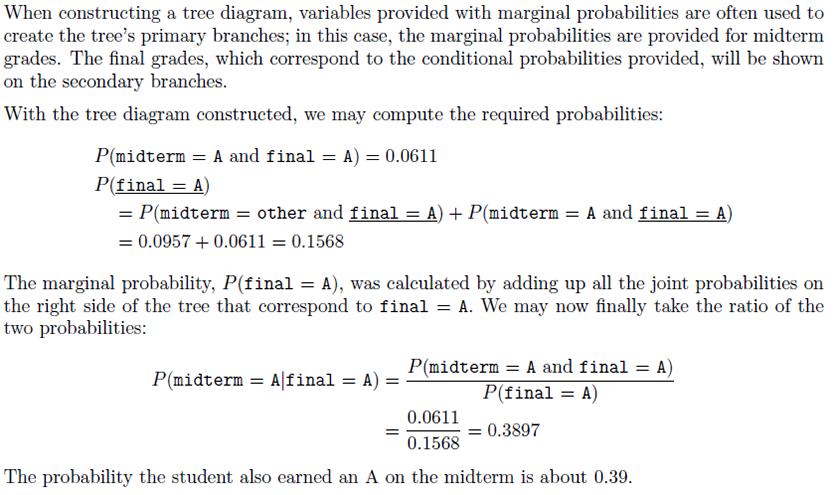
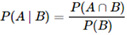
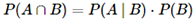
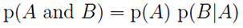
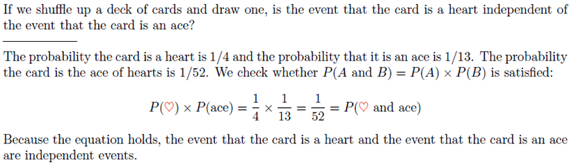

Statistics for Data Science
University of Waterloo Professional Development
Statistics is the study of how best to collect, analyze, and draw conclusions from data (identify the problem → collect relevant data → analyze the data → form a conclusion).
A summary statistic is a single number summarizing a large amount of data. For instance, the primary results of the study after 1 year could be described by two summary statistics: the proportion of people who had a stroke in the treatment (45/224 = 0.20 = 20%) and control (28/227 = 0.12 = 12%) groups.
When recording data, use a data matrix unless you have a very good reason to use a diferent structure. This structure allows new cases/observational units to be added as rows or new variables as new columns:

Types of data:
- Quantitative (or numerical) data deals with numbers and things you can measure objectively (dimensions such as height, width, and length; temperature and humidity; prices; area and volume).
- Discrete data is a count of something that cannot be made more precise. Typically, it involves integers (the number of children/adults/pets in your family; measured quantities; results of experiments; numerical values obtained by counting).
- Continuous data can be divided and reduced to finer and finer levels (you can measure someone's height at progressively more precise scales - meters, centimeters, millimeters, and beyond; values obtained by measuring - e.g. height of all students; all values in a given interval of numbers - e.g. federal spending).
- Qualitative (or categorical) data deals with characteristics and descriptors that cannot be easily measured, but can be observed subjectively (personal tastes; textures; attractiveness; colour).
- Ordinal data: When items are assigned to categories that have some kind of implicit or natural order, such as "short, medium, or tall", the data is of ordinal nature. Another example is a survey question that asks us to rate an item on a 1 to 10 scale, with 10 being the best. This implies that 10 is better than 9, which is better than 8, and so on.
- Nominal data: Any categorical data that doesn't have an order (e.g. "blue", "red", "green").
- Binary data place things in one of two mutually exclusive categories: right/wrong, true/false, or accept/reject. It is nominal data but with only two distinct categories.
- Other non-numerical data such as text or video data.
Broadly speaking, when you measure something and give it a number value, you create quantitative data. When you classify or judge something, you create qualitative data.
Relationships between data:
- Independent variables: If two variables are not associated, then they are said to be independent. That is, two variables are independent if there is no evident relationship between the two.
- Associated, or dependent: When two variables show some connection with one another, they are called associated variables. Associated variables can also be called dependent variables and vice-versa.
- Positive association: Two variables are said to be positively associated when they have a linear relationship with a positive slope. That means when the value of one variables increases, the value of the other variable increases as well. For example, the amount people spend is positively associated with the money people make, if we assume that people who earn more spend more.
- Negative association: When the value of a variable goes down when the value of another variable goes up. This is often characterized by a downward trend when the variables are plotted.
Scatterplots are a great tool to compare two sets of data:

When we suspect one variable might causally affect another, we label the first variable the explanatory variable and the second the response variable. Is federal spending, on average, higher or lower in areas with high rates of poverty? If we suspect poverty might affect spending, then poverty is the explanatory variable and federal spending is the response variable in the relationship.
Labeling variables as explanatory and response does not guarantee the relationship between them is causal, even if there is an association (also known as a correlation) between the two variables. It is also important to note that causation is an asymmetric relation ("X causes Y" is a different statement than "Y causes X"), whereas correlation is a symmetric relation ("X is correlated with Y" is an equivalent statement to "Y is correlated with X").
In statistics, a confounding variable is a variable that influences both the dependent variable and independent variable giving rise to a misleading association. Confounding is a causal concept and a confounding variable is also known as a confounding factor, a lurking variable, or a confounder. Suppose an observational study tracked sunscreen use and skin cancer, and it was found that the more sunscreen someone used, the more likely the person was to have skin cancer. Some previous research tells us that using sunscreen actually reduces skin cancer risk, so maybe there is another variable that can explain this hypothetical association between sunscreen usage and skin cancer. One important piece of information that is absent is sun exposure. If someone is out in the sun all day, she is more likely to use sunscreen and more likely to get skin cancer. Sun exposure is what is called a confounding variable, which is a variable that is correlated with both the explanatory and response variables. While one method to justify making causal conclusions from observational studies is to exhaust the search for confounding variables, there is no guarantee that all confounding variables can be examined or measured.

Confounding variables can arise for various reasons:
- Confounding by indication: When evaluating the effect of a particular drug, many times people who take the drug differ from those who do not according to the medical indication for which the drug is prescribed.
- Selection bias: Not everyone invited to participate in a study participates, causing imbalance between groups.
- Recall bias: Not everyone with an exposure recalls their exposure history correctly, perhaps causing uneven recall in different groups.
There are many other ways confounding variables can arise including unbalanced groups by chance - especially in smaller studies.
Collinearity (or multicollinearity/ill-conditioning) occurs when independent variables in a regression are so highly correlated that it becomes difficult or impossible to distinguish their individual effects on the dependent variable. Thus, collinearity can be viewed as an extreme case of confounding when, for example: the same variable is essentially entered into a regression equation twice, or when two variables contain exactly the same information as two other variables.
Data collection:
- Observational studies can provide evidence of a naturally occurring association between variables, but they cannot by themselves show a causal connection. For example, data may be collected via surveys, obtaining records (e.g. medical or company records), or by following a cohort of similar individuals as part of a study. In each of these situations, researchers merely observe the data as it arises. Hence, an observational study is conducted when data is collected in a way that does not directly interfere with how the data arises. Data where no treatment has been explicitly applied (or explicitly withheld) is called observational data.
- When the possibility of a causal connection needs to be investigated, an experiment can be conducted. There are both explanatory and response variables in this case. To check if there really is a causal connection between the explanatory variable and the response, a sample of individuals are identified and split into groups. The individuals in each group are assigned a treatment. In statistics, a treatment is a generic term which refers to the specifics of how each group is handled for the purposes of an experiment. When individuals are randomly assigned to a group, the experiment is called a randomized experiment.
In general, association does not imply causation, and causation can only be inferred from a randomized experiment.
Generally, data in observational studies are collected only by monitoring what occurs, while experiments require the primary explanatory variable in a study be assigned for each subject by the researchers. Making causal conclusions based on experiments is often reasonable. However, making the same causal conclusions based on observational data can be unreliable and is not recommended. Thus, observational studies are generally only sufficient to show associations.


This is an experiment, as the researchers assigned the volunteers to a treatment group (beer or water).
For hypothesis testing, many studies focus on the comparison of groups: In observational studies, the comparison focuses on the how the response variable differs between naturally occurring groups in a sample of the population under study. In experiments, the comparison focuses on how an attribute differs across treatment groups.
Forms of observational studies:
- A prospective study identifes individuals and collects information as events unfold. For instance, medical researchers may identify and follow a group of patients over many years to assess the possible infuences of behavior on cancer risk. This prospective study recruits registered nurses and then collects data from them using questionnaires.
- Retrospective studies collect data after events have taken place, e.g. researchers may review past events in medical records.
Studies where the researchers assign treatments to cases are called experiments. When this assignment includes randomization, e.g. using a coin flip to decide which treatment a patient receives, it is called a randomized experiment. Randomized experiments are fundamentally important when trying to show a causal connection between two variables. They are generally built on four principles:
- Controlling. Researchers assign treatments to cases, and they do their best to control any other differences in the groups. Suppose a farmer wishes to evaluate a new fertilizer. She uses the new fertilizer on one field of crops (A), while using her current fertilizer on another field of crops (B). The irrigation system on field A has recently been repaired and provides adequate water to all of the crops, while the system on field B will not be repaired until next season. She concludes that the new fertilizer is far superior. The problem with this experiment is that the farmer has neglected to control for the effect of the differences in irrigation. This leads to experimental bias, the favoring of certain outcomes over others. To avoid this bias, the farmer should have tested the new fertilizer in identical conditions to the control group, which did not receive the treatment.
- Randomization. Researchers randomize patients into treatment groups to account for variables that cannot be controlled. For example, some patients may be more susceptible to a disease than others due to their dietary habits. Using randomization is the most reliable method of creating homogeneous treatment groups, without involving any potential biases.
- Replication. The more cases researchers observe, the more accurately they can estimate the effect of the explanatory variable on the response. In a single study, we replicate by collecting a suffciently large sample. Additionally, a group of scientists may replicate an entire study to verify an earlier finding.
- Blocking. Researchers sometimes know or suspect that variables, other than the treatment, influence the response. Under these circumstances, they may first group individuals based on this variable into blocks and then randomize cases within each block to the treatment groups. This strategy is often referred to as blocking. For instance, if we are looking at the effect of a drug on heart attacks, we might first split patients in the study into low-risk and high-risk blocks, then randomly assign half the patients from each block to the control group and the other half to the treatment group. This strategy ensures each treatment group has an equal number of low-risk and high-risk patients.
A population is a collection of people, items, or events and includes all members of a defined group that we are studying or collecting information on for data driven decisions.
A sample is a small subset or fraction of a population.
A parameter is any summary number, like an average or percentage, that describes the entire population. For example, the population mean μ and the population proportion p are two population parameters.
We might be interested in learning about μ, the average weight of all middle-aged Americans. The population consists of all middle-aged Americans, and the parameter is μ. Or, we might be interested in learning about p, the proportion of likely American voters approving of the president's job performance. The population comprises all likely American voters, and the parameter is p. The problem is that most times, we don't know the real value of a population parameter. The best we can do is estimate the parameter. This is where samples and statistics come in to play.
A sample is a finite subset selected from the population with the objective of investigating its properties. The number of units in the sample is known as the sample size. A sample helps us draw conclusions about the full population. There are 2 key properties of a properly selected sample:
- The sample is randomly selected.
- In general, we always seek to randomly select a sample from a population. The most basic type of random selection is equivalent to how raffles are conducted. A random sample is a group or set chosen from a larger population in a random manner that allows for each member of the larger group to have an equal chance of being chosen.
- What if we picked a sample by hand? It is entirely possible that the sample could be skewed to that person's interests, which may be entirely unintentional. This introduces bias into a sample. Random sampling helps resolve this problem. The most basic random sample is called a simple random sample.
- The sample is a representative sample.
- A representative sample is a group or set chosen from a larger statistical population that adequately replicates the larger group according to whatever characteristic or quality is under study.
However, although random sampling helps minimize bias, there are still ways in which bias can arise:
- In cases of surveys where the non-response rate is high - even if people are picked at random - caution must be taken. For instance, if only 30% of the people randomly sampled for a survey actually respond, then it is unclear whether the results are representative of the entire population. This non-response bias can skew results.
- In convenience samples, only individuals easily accessible are included in the sample. For instance, if a political survey is performed by stopping people walking on Bay Street, this will not represent all of the city of Toronto.
Sampling methods:
- Simple random sampling: Consider the salaries of Major League Baseball (MLB) players, where each player is a member of one of the league's 30 teams. To take a simple random sample of 120 baseball players and their salaries, we could write the names of that season's several hundreds of players onto slips of paper, drop the slips into a bucket, shake the bucket around until we are sure the names are all mixed up, then draw out slips until we have the sample of 120 players. In general, a sample is referred to as "simple random" if each case in the population has an equal chance of being included in the final sample and knowing that a case is included in a sample does not provide useful information about which other cases are included.

- Stratified sampling: The population is divided into groups called strata. The strata are chosen so that similar cases are grouped together, then a second sampling method, usually simple random sampling, is employed within each stratum. In the baseball salary example, the teams could represent the strata, since some teams have a lot more money. Then we might randomly sample 4 players from each team for a total of 120 players. Stratifed sampling is especially useful when the cases in each stratum are very similar with respect to the outcome of interest. We might get a more stable estimate for the subpopulation in a stratum if the cases are very similar, leading to more precise estimates within each group. When we combine these estimates into a single estimate for the full population, that population estimate will tend to be more precise since each individual group estimate is itself more precise.

- Cluster sampling: In a cluster sample, we break up the population into many groups, called clusters. Then we sample a fixed number of clusters and include all observations from each of those clusters in the sample. It is important to note that, unlike with the strata in stratified sampling, the clusters should be microcosms, rather than subsections, of the population. Each cluster should be heterogeneous. Cluster sampling is most helpful when there is a lot of case-to-case variability within a cluster but the clusters themselves don't look very different from one another.

- Multistage sampling: A multistage sample is like a cluster sample, but rather than keeping all observations in each cluster, we collect a random sample within each selected cluster.
Please note that although useful in certain circumstances, the use of stratified or cluster sampling can still be very subjective and can introduce bias into the sample.
Bias is the intentional or unintentional favouring of one group or outcome over other potential groups or outcomes in the population:
- Selection bias: The bias that results from an unrepresentative sample.
- Undercoverage bias: Occurs when some members of the population are inadequately represented in the sample.
- Non-response bias: Bias that results when respondents differ in meaningful ways from non-respondents.
- Voluntary bias: Sample members are self-selected volunteers.
- Response bias: The bias that results from problems in the measurement process.
- Leading questions: Questions that encourage the expected answer.
- Social desirability: Responses may be biased toward what the respondents believe is socially desirable.
Most experiments try to determine whether some type of experimental treatment (or important factor) has a significant effect on an outcome. For example, does zinc help to reduce the length of a cold? Subjects who are chosen to participate in the experiment are typically divided into two groups: a treatment group and a control group. The treatment group consists of participants who receive the experimental treatment whose effect is being studied (in this case, zinc tablets). The control group consists of participants who do not receive the experimental treatment being studied. Instead, they get a placebo (a fake treatment - e.g. a sugar pill); a standard, nonexperimental treatment (such as vitamin C, in the zinc study); or no treatment at all, depending on the situation. After the experiment has been performed, the responses of those in the treatment group are compared with the responses from the control group to look for differences that are statistically significant (i.e. unlikely to have occurred just by chance). The study is ideally double-blind - researchers who interact with the participants and the participants themselves are all unaware of which group they belong to.
A placebo is a fake treatment, such as a sugar pill used in a medical trial. Placebos are given to the control group to account for a psychological phenomenon called the placebo effect, in which patients receiving a fake treatment still report having a response, as if it were the real treatment. By measuring the placebo effect in the control group, you can assess what portion of the reports from the treatment group were due to a real physical effect and what portion were likely due to the placebo effect.
Mean: The average of a set of numbers. The mean is a common way to measure the center of a distribution of data. To find the mean number of characters in set of emails, we add up all the character counts and divide by the number of emails.
Median: The value in middle of a sorted list. If there are an even number of observations, there will be two values in the middle of list and the median is calculated as the average of these two numbers.
Outliers are values that are unusual compared to the rest of the dataset (i.e. especially small or large in numerical value). If we were to find the average salary of 5 employees, whose salaries are $40k, $50k, $45k, $40k and $100k, we compute mean to be sum of salaries divided by 5 which is $55k. However, this isn't the best representation of the group because most of the salaries are between $40k and $50k. The mean is skewed by the one large salary ($100k). In this situation we would typically use a better measure of central tendency, such as the median.
Variance: A measure of the variability of the data. Roughly the average squared distance from the mean.
Standard deviation: How far away the observation is from the mean. The distance is called deviation. 95% of the data points are usually within 2 standard deviations of the mean. The standard deviation is also the square root of the variance.
Histograms provide a view of the data density. Higher bars represent where the data are relatively more common. Histograms are especially convenient for describing the shape of the data distribution. The chosen bin width can alter the story the histogram is telling.
Commonly observed shapes of distributions:


Unimodal and right skewed, with a potentially unusual observation at 60 hours/week.
The most common definition of a percentile is a number where a certain percentage of scores fall below that number. You might know that you scored 67 out of 90 on a test. But that figure has no real meaning unless you know what percentile you fall into. If you know that your score is in the 90th percentile, that means you scored better than 90% of people who took the test.
The 25th percentile is also called the first quartile, Q1. The 50th percentile is also called the median. The 75th percentile is also called the third quartile, Q3. Between Q1 and Q3 is the middle 50% of the data. The range these data span is called the interquartile range, or the IQR (IQR = Q3 - Q1).
The box in a box plot represents the middle 50% of the data, and the thick line in the box is the median. Whiskers of a box plot can extend up to 1.5 x IQR away from the quartiles: max upper whisker reach = Q3 + 1.5 x IQR, max lower whisker reach = Q1 - 1.5 x IQR (IQR: 20 - 10 = 10, max upper whisker reach = 20 + 1.5 x 10 = 35, max lower whisker reach = 10 - 1.5 x 10 = -5). A potential outlier is defined as an observation beyond the maximum reach of the whiskers. It is an observation that appears extreme relative to the rest of the data.
For skewed distributions it is often more helpful to use median and IQR to describe the center and spread; for symmetric distributions it is often more helpful to use the mean and SD to describe the center and spread. If the distribution is symmetric, center is often defined as the mean (mean ~ median), if the distribution is skewed or has extreme outliers, center is often defined as the median (right-skewed: mean > median, left-skewed: mean < median).

A table that summarizes data for two categorical variables is called a contingency table.

A bar plot is a common way to display a single categorical variable. A bar plot where proportions instead of frequencies are shown is called a relative frequency bar plot.

Bar plots are used for displaying distributions of categorical variables, while histograms are used for numerical variables. The x-axis in a histogram is a number line, hence the order of the bars cannot be changed, while in a bar plot the categories can be listed in any order (though some orderings make more sense than others, especially for ordinal variables).
Stacked bar plot: Graphical display of contingency table information, for counts.
Side-by-side bar plot: Displays the same information by placing bars next to, instead of on top of, each other.
Standardized stacked bar plot: Graphical display of contingency table information, for proportions.
A mosaic plot is a graphical display that allows you to examine the relationship among two or more categorical variables. The mosaic plot starts as a square with length one. The square is divided first into horizontal bars whose widths are proportional to the probabilities associated with the first categorical variable. Then each bar is split vertically into bars that are proportional to the conditional probabilities of the second categorical variable. Additional splits can be made if wanted using a third, fourth variable, etc.

The weighted mean is the same as the mean, except that it is influenced more by some observations than others. We assign weights to observations as a sort of way of describing its relative importance. In many applications, there are natural choices for weights. For example, in the county data set, population is a natural weighting factor. We'll use w1 to represent the population of the first county, w2 to represent the population of the second county, and so on. The label x1 will represent the average income of county 1, x2 for the average income of county 2, and so on. Then the mean weighted by population can be written as (this equation represents the weighted mean of income, where the weights are given by the population values).
(this equation represents the weighted mean of income, where the weights are given by the population values).
The weighed mean of observations x1, x2, ..., xn using weights w1, w2, ..., wn is given by
The simple mean is a weighted mean where all the weights are 1:
A variable or process with a random outcome (unknown) is called a random variable. Usually a random variable is represented with a capital letter such as X, Y or Z.
A random experiment is one that leads to one of several possible outcomes. The output of a random experiment is a random variable.
The sample space of a random experiment is a list of all possible outcomes of the experiment.
An individual outcome of an experiment is called a simple event. An event is a collection/set of one or more simple events in a sample space. For example, the event "obtain an even number" when rolling a die is composed of the simple events "2, 4, and 6." The probability of an event is the sum of the probabilities of the simple events that constitute the event.
Approaches to assigning probabilities:
- Classical approach: All possible outcomes are equally probable. For example, if a die can yield 6 possible values, then we assign each outcome {1, 2, 3, 4, 5, 6} the same probability of 1/6.
- Relative frequentist or objective approach: Defines probability as the long-run relative frequency with which an outcome occurs.
 The probability of an event is defined as the proportion of times the event k occurs after a very large number n of trials are performed. In mathematical jargon, we say that as n goes to infinity, practically, we can consider the number of trials n to be very large. To determine when n is "big enough," we use convergence criteria. In simple terms, when the proportion does not change significantly from one trial to the next, we say that it has converged. For example, if you can repeat flipping a coin indefinitely, count how many heads you get, and divide that number by the number of flips, the value you obtain should be 0.5.
The probability of an event is defined as the proportion of times the event k occurs after a very large number n of trials are performed. In mathematical jargon, we say that as n goes to infinity, practically, we can consider the number of trials n to be very large. To determine when n is "big enough," we use convergence criteria. In simple terms, when the proportion does not change significantly from one trial to the next, we say that it has converged. For example, if you can repeat flipping a coin indefinitely, count how many heads you get, and divide that number by the number of flips, the value you obtain should be 0.5. - Subjective approach: This is based on our degree of belief that we hold in the occurrence of an event.
Two outcomes are called disjoint or mutually exclusive if both cannot happen at the same time. For instance, if we roll a die one time, the outcomes 1 and 2 are disjoint since they cannot both occur. On the other hand, the outcomes "1" and "rolling an odd number" are not disjoint since both occur if the outcome of the roll is a 1. If A1 and A2 represent two disjoint outcomes, then the probability that one or the other occurs is given by:
If there are many disjoint outcomes A1, ..., Ak, then the probability is:

For the calculation of probabilities, it is important that the outcomes (sample space) are collectively exhaustive, which means that all possible outcomes must be accounted for. Mathematically this is accounted for when we say that (the sum of all probabilities is exactly 1). It is also important to determine if the outcomes are mutually exclusive, which means that no two outcomes can occur at the same time. When both conditions happen at the same time it is usually referred as MECE: mutually exclusive and collectively exhaustive.
(the sum of all probabilities is exactly 1). It is also important to determine if the outcomes are mutually exclusive, which means that no two outcomes can occur at the same time. When both conditions happen at the same time it is usually referred as MECE: mutually exclusive and collectively exhaustive.
The intersection of two events A and B is the event that occurs when both A and B occur:
The probability of the intersection is called the joint probability. In general, the probability for two or more events is referred as a joint probability.
The events that a teen went to college or not are disjoint. It is not possible that a teen both attended and did not attend college at the same time. However, the events that a teen went to college (or not) is not disjoint with the event that a parent went to college (or not) and both may happen at the same time. The probability of the event "parent has a degree" can be found by summing the probabilities of the events: teen went to college AND parent has a degree + teen did not go to college AND parent has a degree.
Given 2 events, we may be interested in calculating the probability that just one occurs or both occur simultaneously. An event that is the combination of other events is denoted as the union of the events. If we simply attempt to add the probabilities of the events, and the events are not mutually exclusive, we may be double counting them. Let's consider the probability that a teen attends college and/or their parent has a degree:

In general,
If the events are mutually exclusive, then P(A∩B)=0
The complement of an event A (Ac) is the event that A does not happen
A and Ac are disjoint by definition; if an event has a probability P(A), then the complement has probability
A probability distribution is a list of possible outcomes with corresponding probabilities that satisfy three rules:
- Rule 1: The outcomes must be disjoint (mutually exclusive).
- Rule 2: Each probability must be between 0 and 1.
- Rule 3: The probabilities must total 1 (collectively exhaustive).

Simulation of random events:
 As you increase the number of trials in the range() statement, the histogram will tend towards a uniform distribution. By default, all numbers have the same probability.The resulting histogram shows the distribution of rolls from 1 to 6. After 100 rolls, the distribution is not yet uniform.
As you increase the number of trials in the range() statement, the histogram will tend towards a uniform distribution. By default, all numbers have the same probability.The resulting histogram shows the distribution of rolls from 1 to 6. After 100 rolls, the distribution is not yet uniform.
Two processes are independent if knowing the outcome of one provides no useful information about the outcome of the other. For instance, flipping a coin and rolling a die are two independent processes - knowing the coin was heads does not help determine the outcome of a die roll. On the other hand, stock prices usually move up or down together, so they are not independent.
If A and B represent events from two different and independent processes, then the probability that both A and B occur can be calculated as the product of their separate probabilities:

Similarly, if there are k events A1, ..., Ak from k independent processes, then the probability they all occur is:

Let's simulate two independent events: rolling two dice, and then calculate the probability that both dice yield a 6. According to the multiplication rule
According to the multiplication rule which is close to the number obtained from the simulation.
which is close to the number obtained from the simulation.
 The probability that a random teenager from the dataset attended college and that at least one of the teen's parents has a college degree is 231 out of 280 cases:
The probability that a random teenager from the dataset attended college and that at least one of the teen's parents has a college degree is 231 out of 280 cases: The probability that a random teenager from the dataset did not attend college and that at least one of the teen’s parents has a college degree is 49 out of 280 cases:
The probability that a random teenager from the dataset did not attend college and that at least one of the teen’s parents has a college degree is 49 out of 280 cases: These are conditional probabilities because we computed the probability under a condition: a parent has a college degree; the conditional probabilities add up to 1. The conditional probabilities show that there is a connection.
These are conditional probabilities because we computed the probability under a condition: a parent has a college degree; the conditional probabilities add up to 1. The conditional probabilities show that there is a connection.
The conditional probability of the outcome of interest A given condition B is computed as the following:
Applying the general definition to our example:
Joint probability: This is the probability of simultaneous outcomes for two or more variables or processes. For example, the probability that a child went to college when their parents did not.
Marginal probability: If a probability is based on a single variable, it is a marginal probability. For example, probability based solely on the teen variable is a marginal probability. The name marginal comes from the fact that they are located in the margin of probability tables.
From the definition of conditional probability:
When events A and B are independent, the probability of event A is not impacted by the occurrence of event B and vice versa, so the following applies:

Thus, we can conclude that in the special case of independent events:

It is important to understand the difference between independent and disjoint events. The difference is that disjoint events are mutually exclusive and never occur at the same time, so for disjoint events P(A and B)=0. Independent events may happen simultaneously and they do not impact each other, P(A and B)=P(A)⋅P(B). If we toss a coin we may get either heads or tails: these two events are disjoint and do not happen simultaneously. If we toss two coins we will have an outcome of two independent events, one of: {H,H}, {H,T}, {T,H}, or {T,T}. The marginal probabilities defined above describe disjoint events.
Let A1, ..., Ak represent all the disjoint outcomes for a variable or process A. Then if B is an event, possibly for another variable or process, we have:
The rule for complements also holds when an event and its complement are conditioned on the same information:

Example 1: In your sock drawer, you have 4 blue, 5 grey, and 3 black socks. Half asleep one morning, you grab 2 socks at random and put them on. Find the probability you end up wearing: 1 - 2 blue socks; 2 - no grey socks; 3 - at least 1 black sock; 4 - a green sock; 5 - matching socks.
There are two major frameworks that statisticians use to think about probabilities:
- In the frequentist framework, probabilities depend on the relative frequency of repeatable events. This approach works very well when we can define a hypothetical infinite sequence.
- In the Bayesian framework, probabilities represent our perspective, which takes into account what we know about a particular problem. The uncertainty of the relevant measurements are integral to the framework.
For example, when we flip a fair coin many times, the frequentist approach assumes that the statistics of the coin do not change (i.e. the coin remains fair). However, in the Bayesian framework, our perspective of the fairness of the coin may change as new information becomes available.
The Bayesian worldview interprets probability as a measure of believability in an event - that is, how confident we are in an event occurring. Frequentists, whose analysis is a more classical version of statistics, assume that probability is the long-run frequency of events. This makes sense for the probabilities of many events but becomes more difficult to understand when events have no long-term frequency of occurrence.
What is the probability of a die being fair? A frequentist would think like this: We can roll the die many times but that's not going to change whether or not it's a fair die. The probability is either 0 or 1. The frequentist approach tries to be objective in how it defines probabilities. However, sometimes we get interpretations that are not particularly intuitive. A Bayesian would think like this: We can roll the die many times, but if we have different information than somebody else, then our probabilities may be different. Probabilities are updated as more data comes in. This is inherently a subjective approach to probability. The Bayesian framework works well with a mathematically rigorous foundation and follows all probability rules (i.e., pi<1, ∑pi=1). Thinking in this way leads to much more intuitive results.
Certain questions, such as coin flips, dice rolls, and other situations in which probabilities are static are easily answered using a frequentist approach. However, when the probabilities are not static, Bayesian analysis becomes a more intuitive way to investigate a problem. For example, user preferences on topics such as movies and products in online stores are complex, rely on many factors, and can change rapidly. For these scenarios, a frequentist approach is less useful because it is extremely difficult to predict the underlying statistics, whereas a Bayesian approach allows us to update our user preference model as more data comes in.
If a probability is based on a single variable, it is called a marginal probability:

The probability of outcomes for two or more variables or processes is called a joint probability:
The conditional probability of the outcome of interest A given condition B:


Two events are called independent when:


Example 2:
There are situations where we witness a particular event and we need to compute the probability of one of its possible causes. In other words, we observe P(A|B) and we want to know P(B|A). This is where we apply Bayes' Theorem.


We can now add the equation for the sum of conditional probabilities. Suppose like before that A1, ..., Ak represent all the disjoint outcomes for a variable or process A:
Bayes' Theorem can be thought of as a way of "inverting" conditional probabilities. Sometimes we know P(A|B) but we need to calculate P(B|A).
Example 3:
Example 4:
The Bayesian approach assumes that we always have a prior distribution even though it may be very vague, equiprobable, or even outright wrong. When we obtain new data, we update the prior distribution in light of the new data to get an updated probability distribution called the posterior distribution. The posterior distribution reflects our state of knowledge after collecting the data.
Rewriting Bayes' Theorem with H and D yields: p(H) is the probability of the hypothesis before we see the data, called the prior probability
p(H) is the probability of the hypothesis before we see the data, called the prior probability
p(H|D) is the probability of the hypothesis after we see the data, called the posterior
p(D|H) is the probability of the data under the hypothesis H, called the likelihood
P(D) is the probability of the data under any hypothesis, called the evidence or normalizing constant
Example 5:
If we have a random variable (X) with multiple possible outcomes, our expectation is that its expected value will be the sum of its probabilities multiplied by their value.
Example 6:
The variance is calculated as the squared difference between each value and the mean, multiplied by the probability.
Example 7: